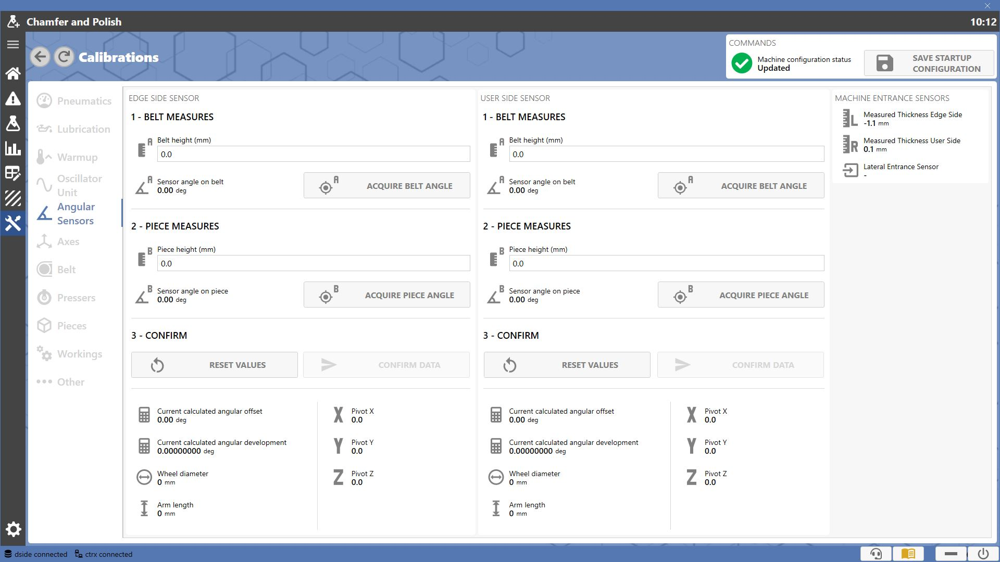
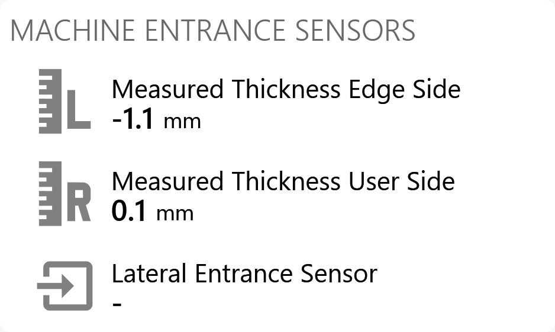
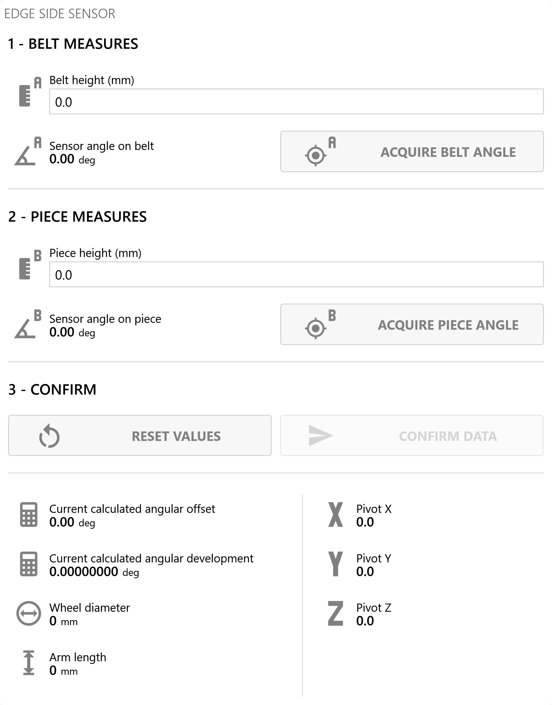
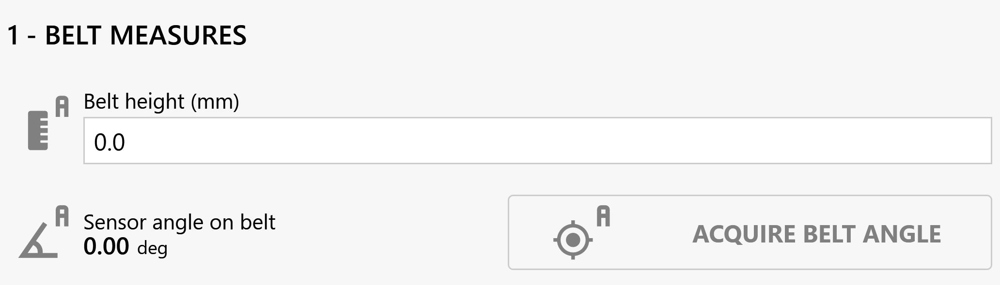
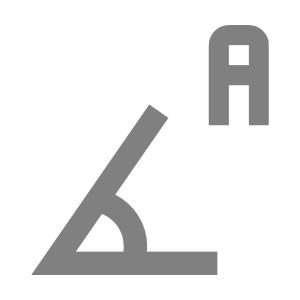
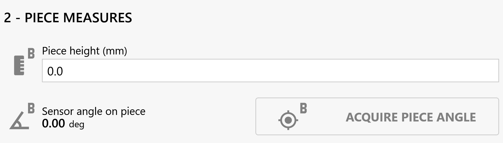

This section can be used to calibrate the machine angular sensors.

Machine entrance sensors

 | Measured Thickness Edge Side |
Measured Thickness User Side | |
Lateral Entrance Sensor |
Angular sensor parameters
The screen displays the sections dedicated to the angular sensors, arranged side by side.
The user can calibrate an angular sensor through the appropriate section.

The User side sensor and Edge side sensor have the same fields and commands, and the user can follow the same procedure.
First piece measures
Values to acquire when the angular sensor is touching the belt.

 | First piece thickness |
 | Sensor angle on first piece |
 | Acquire first piece angle |
Second piece measures
Values to acquire when there is a piece below the angular sensor.

Second piece height | |
 | Sensor angle on second piece |
 | Acquire second piece angle |
Confirm
These commands allow to restart or complete the calibration procedure.

 | Confirm data |
 | Reset values |
Sensor data
Data related to the sensor that can be obtained from the machine. In order to update these fields, refresh the page.

Current calculated angular offset | |
Current calculated angular development | |
 | Wheel diameter |
 | Arm length |
Pivot X | |
 | Pivot Y |
Pivot Z |
Calibration procedure
Take a piece and measure its thickness.
Put the piece below the machine’s angular sensors
Enter the first piece thickness for the selected sensor and select Acquire first piece angle.
Use a second piece of different thickness and put it below the machine’s angular sensors.
Enter the first piece thickness for the selected sensor and select Acquire second piece angle.
Check both acquired angles, select Confirm data, and accept the confirmation dialog to send the values to the PLC.
Repeat for the other sensor when it also requires calibration.
Reset values clears a pending acquisition in the selected sensor card; it does not perform a PLC reset.